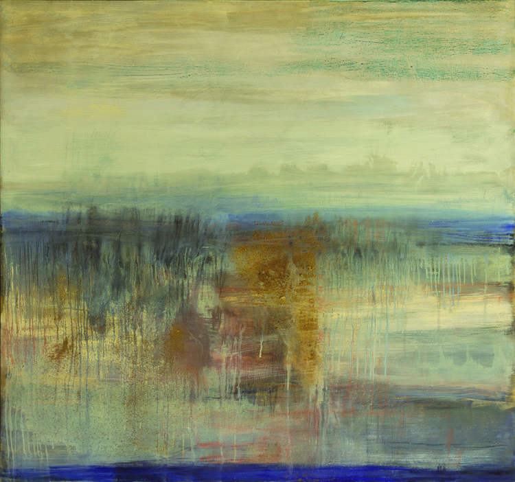
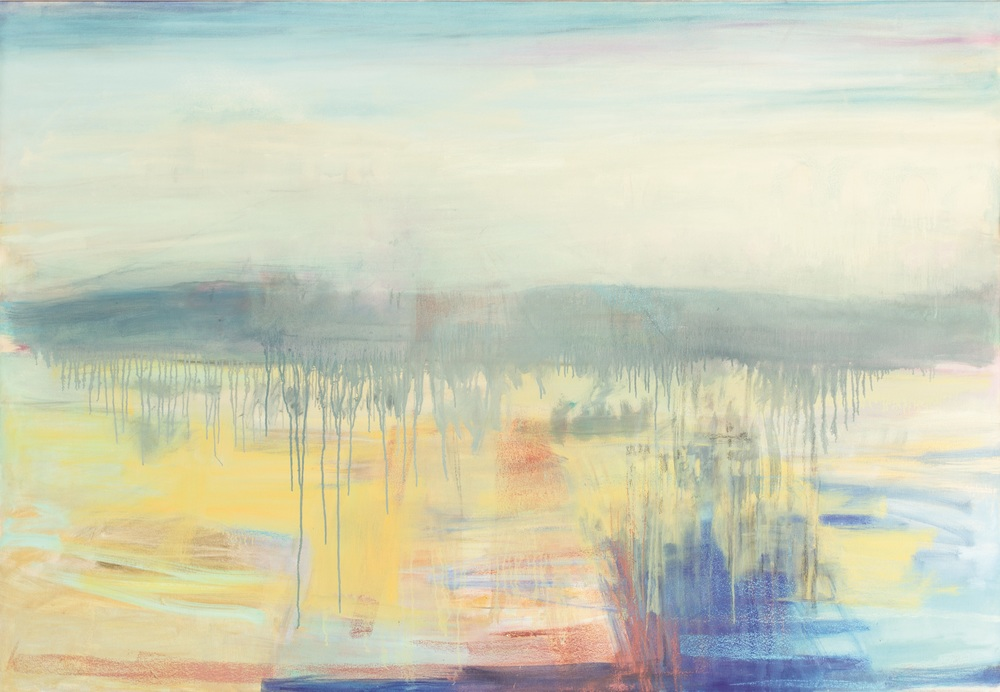

We find in colonial art an obsessive preoccupation with landscape and description. In a way, this is obvious: the first need in a new country must be to comprehend the physical environment. “To think if one could express it all, make others feel what beauty there is,” Tom Roberts wrote in 1897. His urge was topographical, intended to answer the question, “what does the place look like?” When Roberts said, “Australia hasn’t fairly been touched yet”, he was referring both to the lack of geographical penetration of artists beyond the perimeter of the continent, and to the inadequate vocabulary of European-trained artists to express the unfamiliar light and unique vegetation – the dislocation of the environment from the language available to describe it (He was, of course, unfamiliar with the long tradition of Aboriginal art and its predication on the landscape).
From Roberts’ generation of impressionists, who sought to capture “only as much as we feel sure of seeing," the next urge of artists was moral: how does a place influence people, and how, in their turn, do people make their marks upon a place? Sidney Nolan scorned the Heidelberg School’s “sitting in the sun”, instead seeking through his art “the constant beneath". Along with Russell Drysdale and Fred Williams, Nolan’s descriptions of the desert interior and dry scrub of Australia became a deep part of the national consciousness.
Now, Susan Ecker, three decades into her career, shows that painting the landscape remains a vital and powerful force in Australian art. Ecker first came to Western Australia from her native New York in 1996. Having long practiced as a painter, she, like Guy Grey-Smith, Margaret Preston and Elise Blumann before her, was immediately captivated by the challenge of representing the local landscape. Her second Australian exhibition in 1999, Drawn to New Light, drew praise for “coming to grips with an environment that must be very different[…] she captures both extremes of Australia – her small works are strong and emotive, while the large works are light and airy."
In 2010 Ecker settled permanently in Donnybrook and set to working on the body of paintings and prints in Elemental Space/Elusive Place. These works are all landscapes of the South West, made in the past few years. The paintings are rigorously considered, from the size of their canvasses to their internal geometries and scrupulous colour relationships. Her works evoke mood and memory as much as specific topography. Passing time, changing light, gradations of temperature, dampness in the air and texture underfoot animate her paintings. In this way, the enquiries of her art are subtler than those that have gone before. Rather than simple matter, her paintings are more about air. They have as much a sense of pause as of movement, and they collapse the distinction between space and time. They compel the viewer to consider the spiritual and emotional qualities of the landscape, and its ongoing power to shape people. As an exhibition, Elemental Space/Elusive Place presents a concentrated experience of place, yielding an expression of its essential spirit.
Western Australia’s South West cultivates hardy survivors. Confronted with dry, leached soils and deeply weathered slopes, many South West plants have refined their ability to access water and nutrients. Emblematic of this region is the furrow-trunked Jarrah tree. The network of mill towns in this area – Dwellingup, Harvey, Collie, Kirup, Bridgetown – are testimony to 150 years of aggressive timber harvesting that claimed the majority of the mature trees. Nevertheless, the forests are still plentiful, and the most distinctive part of this place. Jarrah trees have adapted to millions of years of climatic hardship by adapting their root structure, developing a downward tap-root that burrows as far as the trunk grows upwards, able to reach the water table up to 40 metres deep.

It is the image of the tap-root that strikes me when I look at Scarp-Winter/Cobalt-Jarrah. In this work, Ecker expresses the fundamental elements of the landscape through rhythmic patterns, with the textured surface creating descriptive detail and nuance in abstraction. Colour is used in a highly expressive manner, with the harmonious combination of dark blues against orange-gold conveying a richness of atmosphere and a distinct sense of weather encroaching. This painting brings to words of Noongar elder Noel Nannup who said that when it rains, the spirit of his people is swept from the body and runs down to the catchment bowls of their birth.[8] In hinting at moisture, at the trickling wetness at the depths of the earth and the louring presence at the horizon, this work inserts itself down hard and deep in the mind, like the tap-root of a tree that shows no signs of withering away.
Susan Ecker’s paintings seek the immutable quality of landscape, reducing it to simple elements to which viewers respond immediately and emotionally. In doing so, she creates paintings that impress themselves deeply on the mind. Summer Light presents a striking combination of blues and greys of foliage set against lavender, yellow, blue and red of the background. The features of the scene slip and resist the imposition of definite labels. What could be wetlands resolves in another moment into the ghost of a track winding through a paddock. Trees rise up on the horizon then shrink down to mere shrubs on a hillock. The threshold between fixed identifications in Ecker’s work creates a liminal space. It opens up the possibility of a cultural hybridity that entertains difference without an assumed or imposed hierarchy.
Instability is a persistent theme in the landscape of our coastal plains, with lakes, dunes and woodlands increasingly squeezed between the spreading conurbation of Perth and Mandurah and the filling coast near Bunbury, all scored through by the straight line of the Forrest Highway. Scarp-Winter/Cobalt-Yellow seems to express the conditional nature of our settlement, the permeability of this land. The shimmering horizon appears to slip and crawl in the heat of the day. The Perth modernist painter Elise Blumann spoke of how “in [her] effort to give a feeling of sharp flatness” she would “force [her] compositions with as much solid light as possible". In this painting, bands of vivid colour suggest the flattening effects of the Western Australian light, and give expression to the broad expanses of hills, sky, foliage and earth. The distant rise of the backdrop trembles and spasms, as if threatening to foreground itself. The fizzing landscape resists any attempt to impose control – it expresses an organic, material reality that is bigger and more complex than our selves and our mean carryings on.
Rather than painting in the open air like her Heidelberg School forebears, Susan Ecker works from the studio. As she works, she draws from accumulated memory, as well as directly from the view of the Donnybrook hills spilling in every direction outside her window. Working in this way, her paintings could be considered pastoral scenes, but they exceed the conventions of that genre. We see this in works like Scarp-Dusk/Gray-Light Earth-Yellow, which has none of the ordinary bucolic neatness of enclosure. The treatment of space in this work gives a particularly vibrant and energetic quality to the painting.
The painting presents sky, distant hills and rows of trees through flat blocks of neutral colour, with hatched striations suggesting a densely detailed canopy. The flats of the mid-ground are shown as a band of greens and yellows, and a more muted lavender interrupts top half of the picture, indicated depth and shadow in this more wooded area of the landscape. Where the picturesque tradition of painting might suggest receding space through subtle atmospherics, the clear dry air of Western Australia precludes this possibility. Instead, in Scarp-Dusk/Gray-Light Earth-Yellow, stalks of grass or shrub act as significant markers leading the eye across the image. There is an expansive quality to the elements of the landscape, and they can be imagined extending outwards beyond the picture plane. Ecker does not put a boundary on the landscape, which would mark it as a settled, cultivated space, but rather argues that we cannot have dominion over the land. Instead, we must work to create symbiosis with the land, and accept and appreciate its power over us and our imaginations.

Here at Bunbury Regional Art Galleries, we are just ten minutes walk from a wooden boardwalk, which snakes its way through salt marshes and tide-washed thickets of White Mangrove trees. These mangroves are remarkable because of their rarity – outside of this immediate area, the nearest mangroves of this sort grow hundreds of kilometres north on the Abrolhos Islands. The seeds of the plants that grow here today floated down the Western Australian coast from warmer northern waters and lodged in the silt of the Leschenault Estuary thousands of years ago. To draw again on the symbolism of the south west’s biodiversity, I am reminded that we are all strangers to this land, and arriving here has transformed us. Those who came in ancient times learned to treat the land as an extension of their own being, expressing that in some sense they did not own the land, but rather were owned by it. We more recent arrivals soon learn the power that the land has to move us, to force us into unfamiliar postures. This continent is fierce and it is uncompromising.
The sense of volatility we perceive in the Australian landscape is unlikely to disappear, even as we spread across the plains, as extremes of weather become more commonplace. We see evidence of this in our recent history. The Waroona bushfires burned through an area of land larger than 71,000 hectares, destroying almost the entire town of Yarloop, and licking at the outskirts of the major populated areas outside Bunbury. Our “land that drinks the sea” is drought-weakened and heavily reliant on desalination plants for fresh water. Interaction with nature is a crucial and pressing aspect of Australian life. In his seminal 1977 text on the Swan Coastal Plain, George Seddon said, “how and what we see depends on what we value […] to see differently is to behave differently". By treating landscape as a worthy subject, artists like Ecker remind us to treasure the land, and to recognise the chance we have to defend it.